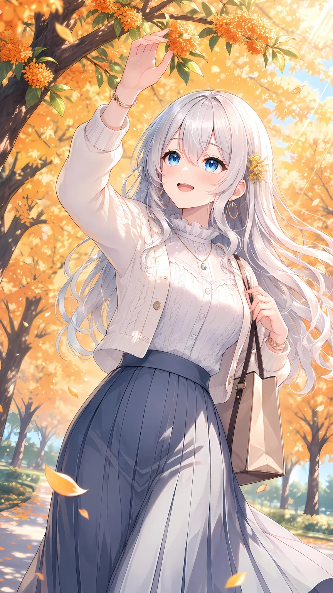
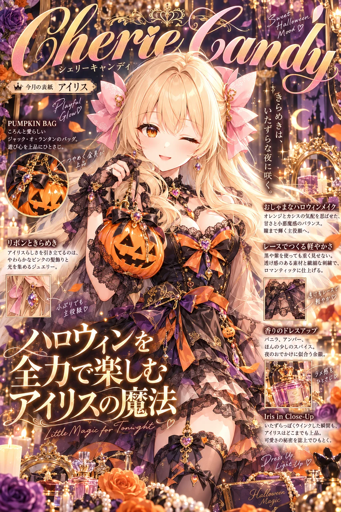
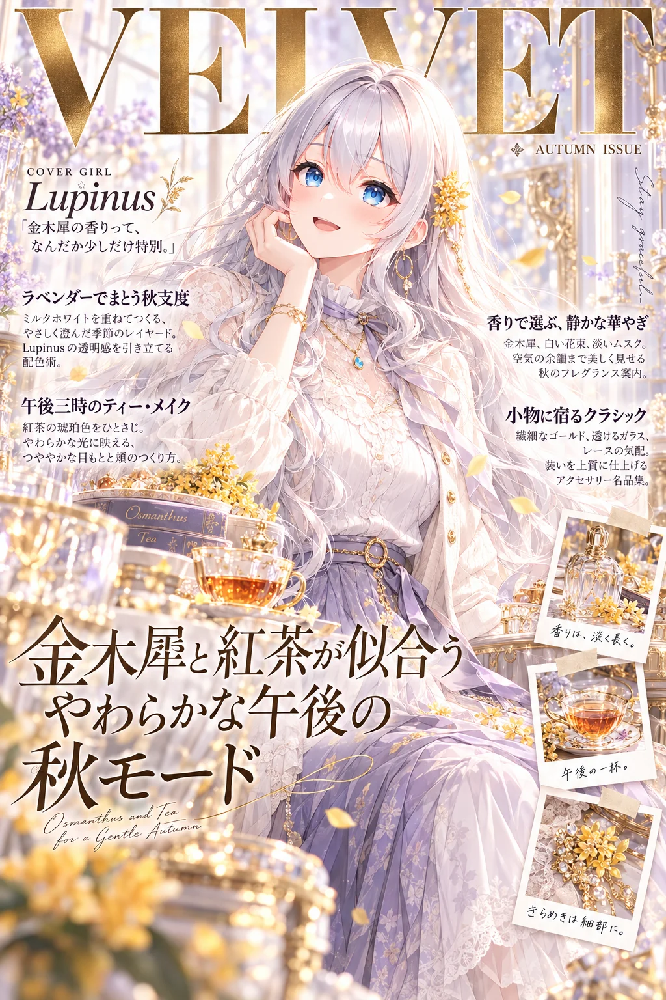
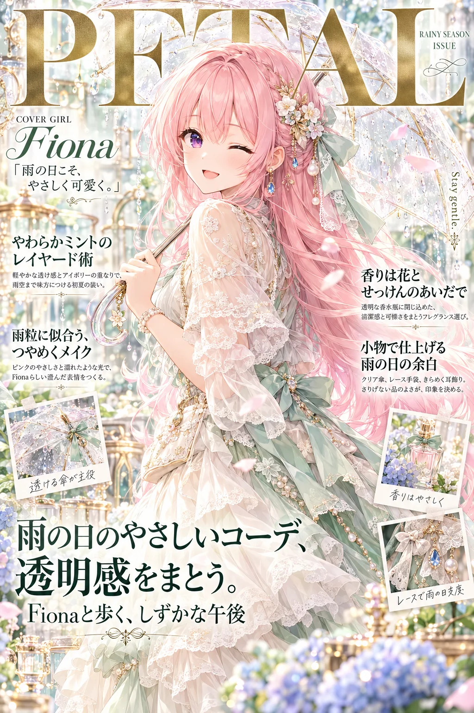
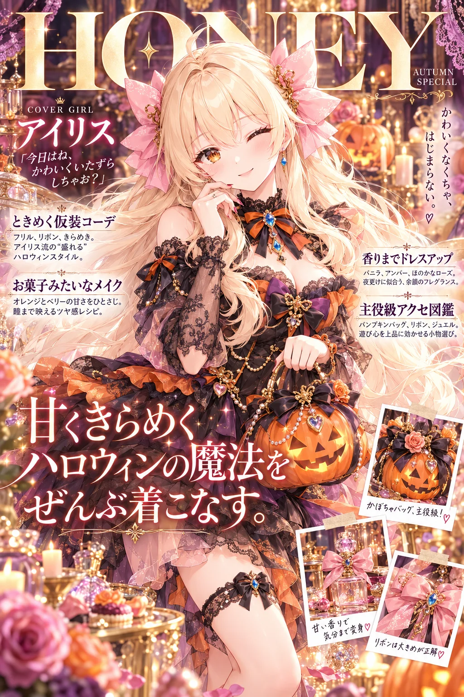

GPT-image-2 用2026-10-02
ChatGPT（GPT-image-2）に自分のキャラの絵を1枚渡して、この文を貼るだけ。キャラの名前を入れると、表紙と紹介文にその名前が入ります。誌名も見出しも紹介文も、AIがキャラの見た目や雰囲気を読み取って考えてくれます。テーマカラーとポーズは空欄でもOK。書店に並んでいそうな、文字たっぷりの美しい表紙になります。
作例





※作例の画像の転載・保存しての再配布はご遠慮ください。
3人のおしゃべり（表紙になったよ）
アイリス
ちょっと待って、あたしが表紙！？ しかも表紙に、あたしの名前がおっきく入ってる！

ルピナス
私の号は「秋のモード誌」です。誌名は筆記体、小見出しも紹介文も、ぜんぶAIが考えてくれました
フィオナ
雨の日のコーデ特集……。小窓で耳飾りまで拡大されていて、こんなところまで見られていたんですね
アイリス
フィオナの号、「しずく色メイク」だって！ 今度そのメイク、あたしにも教えてね？
フィオナ
わ、私が書いたわけじゃないです……！ AIさんが勝手に……！
ルピナス
名前とジャンルと特集を入れるだけで、文字いっぱいの素敵な表紙になりますよ。テーマカラーとポーズは、空欄のままでも大丈夫です
使い方（3ステップ）
- ChatGPT を開いて、画像を作れるモード（GPT-image-2）にする
- 自分のキャラの絵を1枚だけ添付する（自分の絵・使ってよい画像だけ。いつもの絵のままでOK。下の「おまけ」で元絵を作った人は元絵を）
- 下のプロンプトをワンタップでコピーして、【キャラの名前】【雑誌のジャンル】【特集のテーマ】を書き換えて送信する（テーマカラー・ポーズは空欄でもOK）
プロンプト
【色の付いたところ】を自分の内容に書き換えて使ってください。
プロンプト
添付した画像のキャラクターを読み取って、そのキャラのために作られた「架空の高級ファッション誌の表紙」を1枚のデザインとして作ってください。 誌名・見出し・コピー・紹介文は、キャラの見た目や雰囲気からあなたが考えて書いてください。 【キャラの名前】（必須：例 ルピナス／Lupinus。アルファベットで書いた場合は欧文の表記もその綴りを使う） 【雑誌のジャンル】（例：秋のモード誌） 【特集のテーマ】（例：金木犀と紅茶の季節） 【テーマカラー】（任意：空欄ならキャラの髪や服の色から、いちばん映える配色をおまかせ） 【ポーズ・追加の指示】（任意：空欄ならおまかせ。例 片手で帽子を押さえる／紅茶のカップを持つ） ■ 画面の作り ・キャラ：顔立ち、髪型、髪色、目の色は添付画像のまま。服は特集のテーマに合う華やかな服にする。腰から上〜膝上、カメラ目線でやさしく微笑む（【ポーズ・追加の指示】があればそれを優先） ・【キャラの名前】を「今月の表紙」として表紙のどこかに入れ、紹介文の中でも名前で呼ぶ ・誌名：上部に大きく、筆記体の欧文ロゴ。その下に小さくカタカナの読み ・特集の大見出し：細く上品な明朝体で2〜3行 ・小見出しとリード文：画面の左右に4〜6か所。短い見出し＋2〜3行の紹介文を小さめの明朝体で（コーデ・メイク・香り・小物など、キャラに合わせた企画をあなたが考える） ・詩的なひとことを縦書きで1か所。小さな欧文のコピーをところどころに添える ・キャラの小物やアクセサリーを丸や四角の小窓で拡大し、手書き風の注釈と細い矢印で説明する ・年号や日付、号数、値段は入れない ・文字は大・中・小の段差をはっきりつけ、余白を生かした洗練されたエディトリアルデザインにする。日本語は正しく、崩れや誤字のない文字で ・背景：テーマカラーでまとめた豪華なセット。花、金の細工、レース、光を通すガラスやクリスタルの小物、透明な香水瓶を奥行きをつけて置く ■ 仕上がりの質（ここは変えない） ・キャラは細く繊細な線で、髪は毛束と光の透けまで描き込む。瞳は宝石のように何層ものハイライトを重ねる ・ガラス、クリスタル、宝石は、透明感と屈折、映り込み、きらめきを写真のようにリアルに ・レース、刺繍、アクセサリーの金具まで細かく描き、画面の情報量を多くする ・やわらかな逆光、光の粒、舞う花びら、手前と奥のきらめくボケで空気感を出す ・上品で透明感のある配色。ハイエンドな広告ビジュアルの最高品質、超高精細 ・縦長 2:3
変えるところ
| ところ | 説明 | 例 |
|---|---|---|
| 【キャラの名前】 | 必須。ロゴや紹介文にこの名前が入ります。アルファベットで書くと、欧文のロゴもその綴りになります（カタカナだけなら、AIが読みから綴りを考えます） | ルピナス／Lupinus／アイリス |
| 【雑誌のジャンル】 | どんな雑誌にするか。表紙の雰囲気と文字のテイストが変わります | 秋のモード誌／ポップなガーリー誌／ナチュラル系のやさしい誌／ゴシック誌 |
| 【特集のテーマ】 | 大見出しと服・小物のテーマ。季節や行事を入れると雰囲気が出ます | 金木犀と紅茶の季節／ハロウィンを全力で楽しむ／雨の日のやさしいコーデ |
| 【テーマカラー】 | 任意。空欄なら、キャラの髪や服の色からいちばん映える配色をAIがおまかせで選びます | （空欄）／ラベンダーとミルクホワイト／オレンジとパープル |
| 【ポーズ・追加の指示】 | 任意。空欄ならおまかせ。ポーズ・持たせたい物・入れたい小物などを自由に書けます | （空欄）／ほうきに横座りしてピース／透明な傘を肩にかけて振り返る |
（おまけ）元絵を綺麗にしておくと、もっと綺麗に
元絵は作っても作らなくても大丈夫です。いつものキャラの絵をそのまま添付しても、上のプロンプトで綺麗に仕上がります。もっと綺麗に・毎回ブレずに作りたい人は、先にこの手順でキャラの「元絵」を作っておくのがおすすめです。書き換えるところはないので、そのままコピーして使えます。
- ChatGPT を開き、新しいチャットで画像を作れる状態（GPT-image-2）にする
- 自分のキャラの絵を1枚だけ添付する（ラフ・小さい絵・スクショでも大丈夫。顔と服がわかる絵がいちばん）
- 下の「元絵を作るプロンプト」をそのままコピーして貼り、送信する（書き換えるところはありません）
- できた絵を保存する。これがあなたのキャラの「元絵」です（ほかの配布プロンプトでも使い回せます）
- 新しいチャットを開き、保存した元絵を添付して、このページの上の「プロンプト」を貼って送信する
元絵を作るプロンプト（そのままコピーして送るだけ）
添付した画像のキャラクターを、ほかのプロンプトで使う「元絵」として、同じキャラのまま最高品質の繊細なアニメイラストで描き直してください。 ■ キャラ（ここは添付画像のまま） ・顔立ち、髪型、髪の長さ、髪色、目の色、髪飾り、服のデザインと色、アクセサリーは添付画像のまま変えない ・添付画像で見えない部分は、見えている部分から自然につなげて描く ■ 構図 ・太ももから上、体を少しななめにして顔はこちらを向き、カメラ目線でやさしく微笑む ・顔、髪飾り、服の前面がはっきり見えるように。片手は胸もとに軽く添え、もう片方の手は自然に下ろす ・背景は白から淡い色へのやわらかいグラデーションだけ。花や小物、文字は入れない ■ 仕上がりの質 ・線は細く繊細に。髪は一本一本の毛束と、光が透けるやわらかさまで描き込む ・瞳は宝石のように何層もの色とハイライトを重ねて、きらきらと輝かせる ・肌はやわらかな陰影と、頬にほんのり血色 ・服のレースやフリル、刺繍、アクセサリーの宝石と金具まで細かく描く ・やわらかな逆光で輪郭をきれいに。上品で透明感のある配色、ハイエンドなアニメイラストの最高品質、超高精細 ・縦長 2:3
うまくいかない時
- 顔や髪色が元の絵と変わったら、同じチャットで「顔立ち・髪型・髪色・目の色は添付画像のままにして描き直して」と送ってください。
- 服が変わったら、同じチャットで「服のデザインと色も添付画像のままにして描き直して」と送ってください。
- 目を閉じた絵や横顔の絵を添付したときは、プロンプトの最後に「・目は〇色」と1行足すと正確になります。
- 気に入った元絵は1キャラ1枚、大事にとっておくと、毎回キャラがブレません。
メモ
- 名前をカタカナだけで書くと、欧文の綴りはAIが読みから考えます。綴りを決めたいときは「ルピナス／Lupinus」のように英字も書いてください。
- 年号や値段が勝手に入るときは、「年号や日付、号数、値段は入れない」の行が消えていないか確かめてください。
- 文字がつぶれたり誤字があるときは、同じチャットで「文字の崩れと誤字を直して、もう一度」と送ると直りやすいです。
- 顔が添付と変わるときは、同じチャットで「顔立ち・髪型・髪色・目の色は添付画像のままにして描き直して」と送ってください。
- 「■ 仕上がりの質」の段落は消さずにそのまま送ってください。ここが絵の繊細さと透明感を決めています。
配布ルール
- ⭕ プロンプトの改変は自由です。
- ⭕ 生成した画像は SNS に投稿して大丈夫です。
- ❌ プロンプト文そのものの転載・再配布・販売はしないでください。
- ❌ 自作のプロンプトだと名乗ることはやめてください。
- ❌ このページの作例画像の無断転載はしないでください。
- ❌ 実在の人物の写真や、他の人のキャラクターの画像を無断で添付しないでください。
- 💌 使ったら #ルピナスプロンプト を付けて見せてくれたら、とても嬉しいです（任意です）。
バックナンバー
バックナンバー（過去の配布）はここからは辿れません。欲しい方は X（@irisfionaAIBS）／Bluesky の DM で気軽に声をかけてください、URL をお送りします。